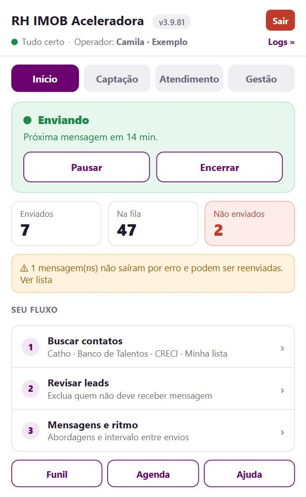
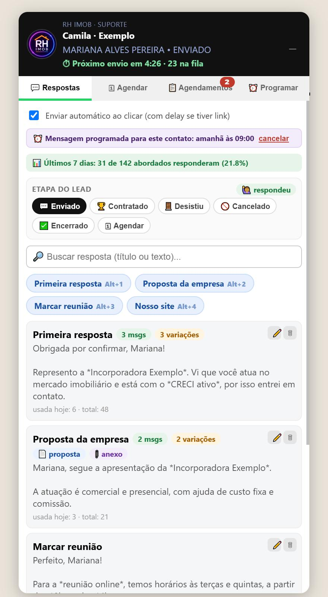

Guia base · vale para todos
Do contato na fila até a entrevista
Seja qual for a origem dos seus contatos, daqui para frente o caminho é sempre este.
📨 A extensão enviaa primeira mensagem para cada contato da fila, no seu horário e no seu ritmo.
💬 Você conversacom quem responde, pela bolha da RH IMOB dentro do WhatsApp Web.
📊 Ela medequem respondeu, quem recebeu a proposta e quem agendou.
Antes de começar
- Entre na extensão. Clique no ícone RH IMOB Aceleradora no canto do Chrome e use o usuário e a senha que a RH IMOB te passou. No primeiro acesso, um guia na tela mostra onde fica cada coisa.
- Deixe o WhatsApp Web aberto neste Chrome, conectado pelo celular. As mensagens saem por ele, então a aba precisa ficar aberta enquanto a extensão trabalha.
1. Confira as mensagens e o horário
- No popup, abra Disparo › Mensagens e ritmo. Ali estão as abordagens: a extensão sorteia uma para cada contato. Clique em ✏️ Editar para mudar o texto; a prévia mostra como a mensagem chega.
- Use {nome} para o primeiro nome e {saudacao} para "bom dia/boa tarde". Se o contato não tiver o dado, a frase que dependia dele sai da mensagem.
- Em 🕒 Horário de envio você escolhe os dias, a hora de começar e de terminar e a pausa de almoço. Sempre entre 07:00 e 21:00.
| Ritmo | Quando usar |
|---|---|
| 10 a 15 min (Segura) | Recomendado no dia a dia. |
| 12 a 20 min (Aquecimento) | Número novo ou depois de um bloqueio. |
| 6 a 10 min (Agressiva) | Mais volume, mais risco de bloqueio. |
2. Revise a fila e comece
- Em Disparo › Revisar fila, veja quem vai receber mensagem e exclua quem não deve receber.
- Em Mensagens e ritmo, clique em Iniciar. A extensão envia um por vez. Você pode Pausar quando quiser.
- A tela Início mostra se está enviando, quanto falta para a próxima mensagem e, se parou, o motivo.

3. Converse pela bolha do WhatsApp
- Quando alguém responder, abra a conversa no WhatsApp Web. A bolha da RH IMOB mostra o nome e a etapa do contato.
- Na aba Respostas, clique numa resposta pronta: ela já sai com o nome da pessoa. Use a resposta marcada como proposta para apresentar a empresa.
- Na aba Agendar, marque a entrevista. A aba Agenda mostra o que pede ação hoje: atrasados, entrevistas do dia e quem confirmar na véspera.

4. Acompanhe os resultados
- Em Acompanhar › Leads por etapa ficam todos os seus contatos em colunas, do enviado ao contratado.
- Na Visão geral do Kanban, o botão 📄 Meu resumo (PDF) baixa o resumo do período, já com o nome do arquivo.
Precisa de ajuda?Clique em ❓ Ajuda, no topo do popup. A extensão confere o que está acontecendo, mostra a solução e, se precisar, chama o suporte da RH IMOB com as informações da sua extensão.
ImportanteNada funciona com o computador desligado ou o Chrome fechado. Ao clicar em Sair, o envio para e a fila é esvaziada.
RH IMOB Aceleradora · Guia base · rhimob.com.br